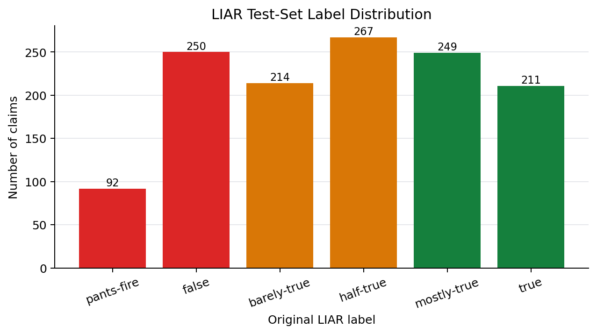
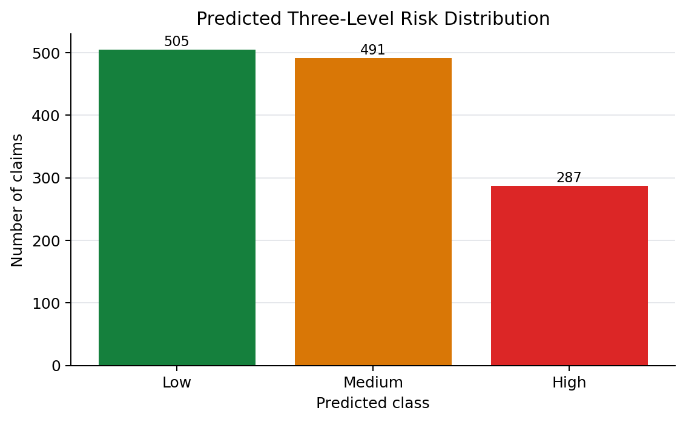
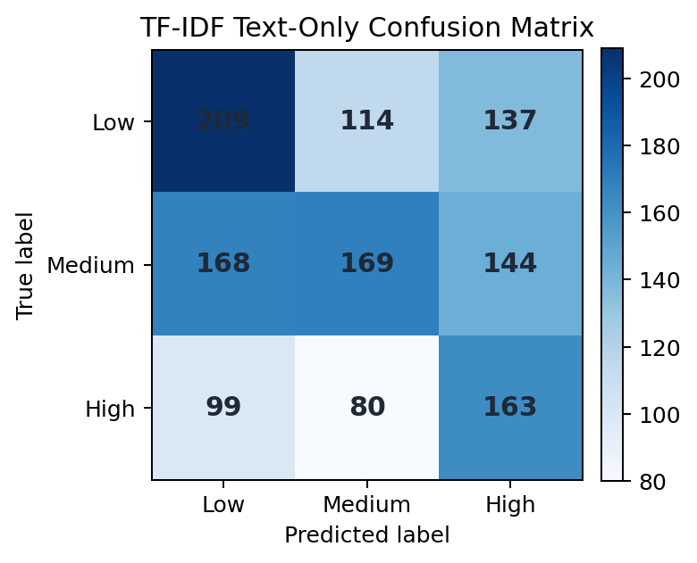
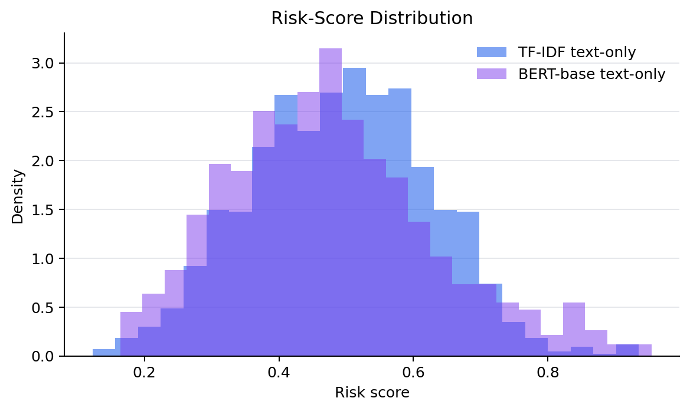

Abstract
This project frames misinformation detection as user-facing risk assistance rather than final truth judgment. We evaluate on LIAR, a public benchmark of 12.8K political claims labelled by fact-checkers, and map six truthfulness labels into a three-level risk task. Under a fair text-only protocol, BERT-base reaches 0.491 macro-F1 and 0.670 macro ROC-AUC, outperforming a text-only TF-IDF logistic regression baseline.
Method
Input
Claim text with subject and context fields from the official LIAR splits.
Features
TF-IDF n-grams for the baseline and BERT tokenization for the transformer model.
Models
Text-only TF-IDF logistic regression and text-only BERT-base fine-tuning.
Output
Risk score, Low/Medium/High level, and human-readable explanation.
Results


Analysis





Ethics and Limitations
The assistant should support verification, not censorship. False positives may unfairly reduce trust in legitimate claims, while false negatives may create over-confidence. A deployed system would need privacy-preserving metadata handling, multilingual evaluation, stronger source reliability signals, and real repost-network analysis.
References
Wang, W. Y. 2017. Liar, Liar Pants on Fire: A New Benchmark Dataset for Fake News Detection. ACL.
Devlin, J., Chang, M.-W., Lee, K., and Toutanova, K. 2019. BERT: Pre-training of Deep Bidirectional Transformers for Language Understanding. NAACL.